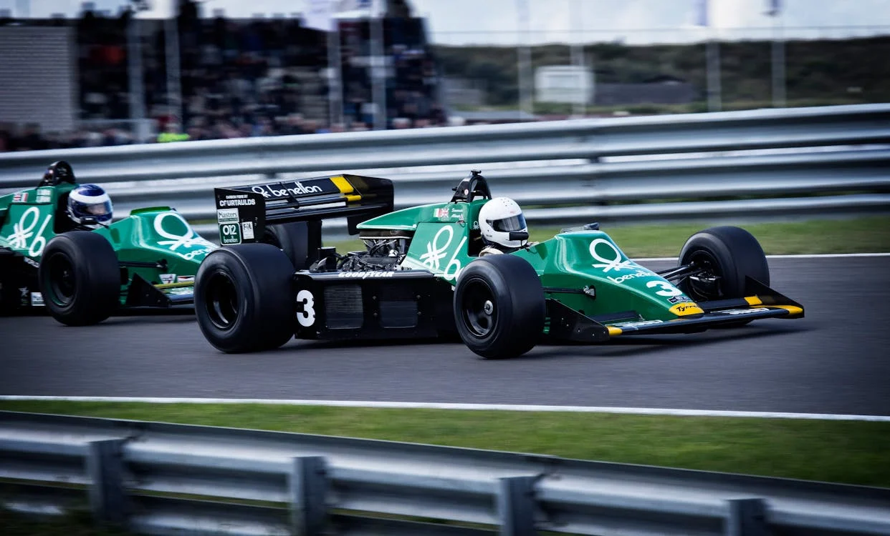

Fsport theme is very clean, decent and easy to install and gives wide range of Prestashop version compatibility, which will be ideally suitable for any sites related with Sport. It was designed with focus on user experience and usability, to make Prestashop shopping easy & quick. Full of new features such as drop down menu, slideshow, powerful admin module, new products display on homepage and so on. Fsport Shop theme will be perfect choise for you. Now, lets check out Theme Features and Demo to see its best performance!
